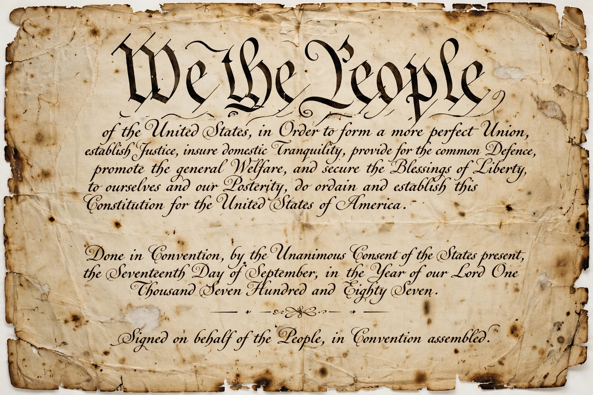

 |
A constitution is the aggregate of fundamental principles or established precedents that constitute the legal basis of a polity, organization, or other type of entity, and commonly determine how that entity is to be governed. When written down, such principles form a codified constitution; when they are embodied in custom, convention, and a collection of documents and statutes, they form an uncodified (or unwritten) constitution, as in the United Kingdom. Constitutions typically establish the structure of government, allocate power among its branches, guarantee fundamental rights, and prescribe procedures for their own amendment.
Early antecedents include the city-state codes of the ancient world and documents such as Magna Carta (1215), which limited the English king's power. Modern constitutionalism emerged in the 17th and 18th centuries, influenced by the English Civil War, the Glorious Revolution's Bill of Rights (1689), and Enlightenment thinkers such as Montesquieu (separation of powers) and Locke (consent of the governed). The Constitution of the United States, drafted in 1787 and effective from 1789, is the oldest written national constitution still in force. France's revolutionary constitutions and the 19th-century spread of liberal constitutionalism across Europe and Latin America followed; the 20th century saw successive waves of constitution-making after the World Wars and decolonization. India's constitution (1950) is the longest written national constitution, while the U.S. constitution is among the shortest.
Constitutions are amended by special procedures — supermajorities, referendums, or constituent assemblies — though a few, such as the German Basic Law, declare certain principles (human dignity, democracy, federalism) unamendable via "eternity clauses". Interpretation by courts generates constitutional law and convention; in uncodified systems, constitutional conventions — binding political customs that are not laws — play a central role.
Constitutions exist at many levels: national constitutions; state or provincial constitutions in federations; municipal charters; and the constitutions of organizations, clubs, and companies. Supranational entities such as the European Union operate under treaty frameworks often described as constitutional in character. A constitution of a state is normally distinguished from a "sham" or nominal constitution in authoritarian states, where formal guarantees are not respected in practice.
This article is a recreation from memory in the style of Wikipedia.